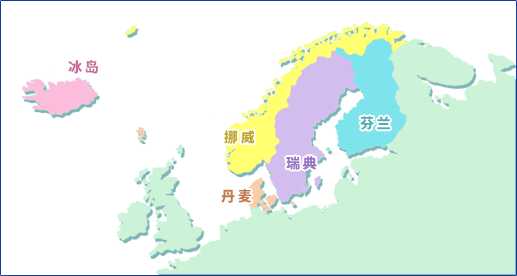

|
北欧的酸奶冰岛/瑞典/丹麦/挪威/芬兰 
斯堪的纳维亚地区
在斯堪的纳维亚地区，曾经采用独特的方法制作发酵乳。传说中当地人将这一地区栖息的捕虫堇和毛毡苔的叶子铺在容器底部，注入牛奶后就能制成自然的发酵乳。也就是说这些植物叶中存在着乳酸菌。当然现在已经没有人采用这种方法了，现在制作的是当地原产，具有强烈韧性的传统发酵乳（Tettemelk、Langfil、Pitkapiima）。之所以会产生粘性，是由于一种叫做乳脂链球菌的乳酸菌所起的作用所致。
冰岛冰岛原产的发酵乳是公元10世纪前开始制作的“Skyr”，将这种脱脂乳使用乳酸菌和凝乳酶（rennet）使之凝固，然后放入麻袋中除去乳清后制成。加放糖、奶油或牛奶、草莓等混合在一起，在早餐或作点心食用。 瑞典在瑞典，制作原产于北部或拉普兰德地区的一种叫做“Langfil”的带粘性的发酵乳，早餐时与玉米片等一起食用。而通常使用的发酵乳，是制作发酵黄油时使用的中温性乳酸菌（黄油起子培养物）发酵的“Filmjolk”，生产量很大。也有与丹麦原产的Ymer相似，含高蛋白质的浓缩发酵乳“Lactofil”。 丹麦丹麦具有代表性的发酵乳叫做“Ymer”。这是从发酵好的牛乳中去除乳清制成，或者用逆渗透法使预先浓缩的牛乳发酵制成的。其特点是蛋白质含量在6%以上。口感非常温顺、浓郁。加上玉米片和麦片粥（燕麦等煮成的粥），在早餐时食用。普通的发酵乳是用黄油起子培养物发酵的“Tykmælk”。 挪威有一种名叫“Tettemelk”，有着很强的粘性和酸味的发酵乳。以前曾经在清洗好的大桶里加入牛奶，放入地窖里发酵而成，所以被称为Cellar milk（地窖牛奶），其特点是冷藏后可长期保存。作为普通的发酵乳，有一种使用中温性乳酸菌（培养温度：20-30℃）制成的“Merkeling”。 芬兰用中温性乳酸菌发酵的发酵乳名叫“Piima”。在西南芬兰地区，传统上制造有粘性的名叫“Pitkapiima”的发酵乳。“Viili”是在乳酸菌发酵的同时，在飘浮的奶油层表面上栖息丝绒状乳霉菌的发酵乳。这是一款不仅具有粘性，而且具有少许酸味和辛辣风味的世界上绝无仅有的霉菌发酵乳。作为早餐和小吃食用，孩子们会撒上一些白砂糖和肉桂来吃。在芬兰东部，传统上是在牛乳发酵后，用烤箱加热，除去乳清，制成具有保存性的浓缩发酵乳“Kockelipiima”，并用牛奶稀释后饮用。 |